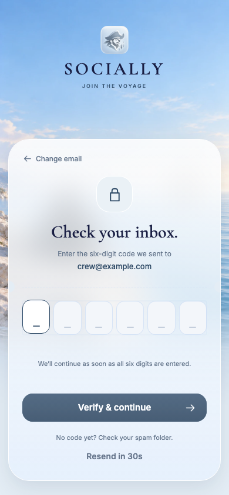
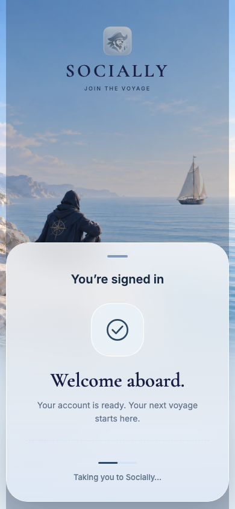
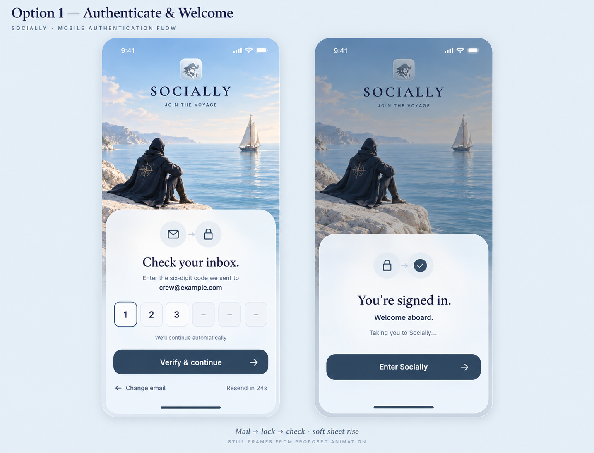
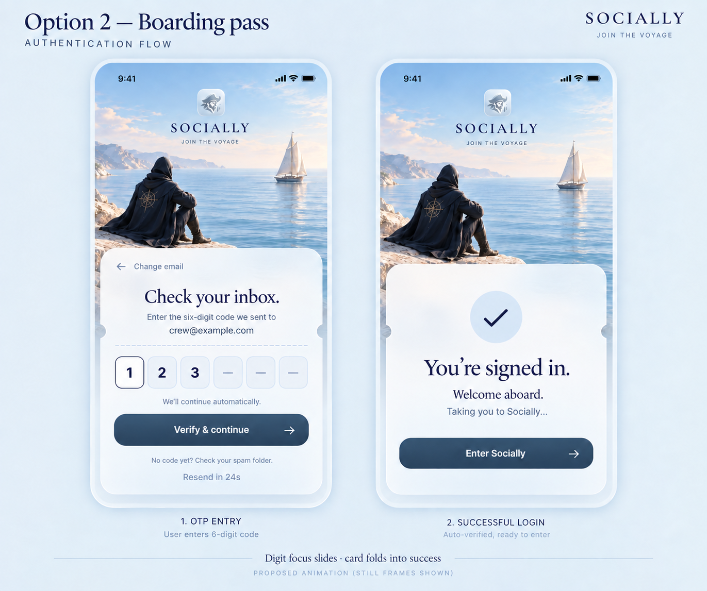
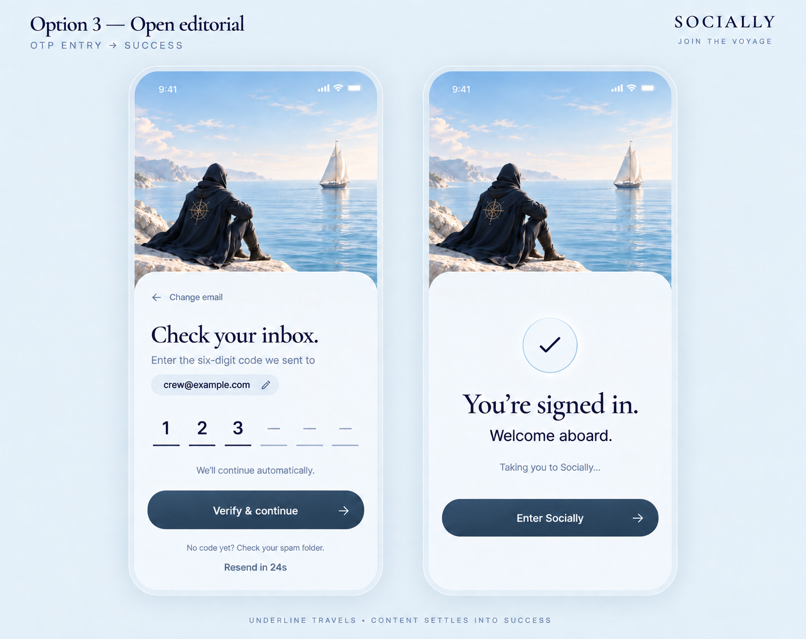
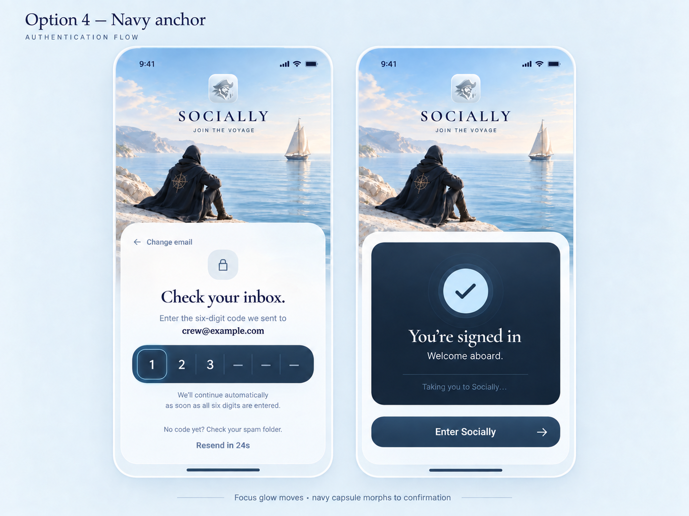
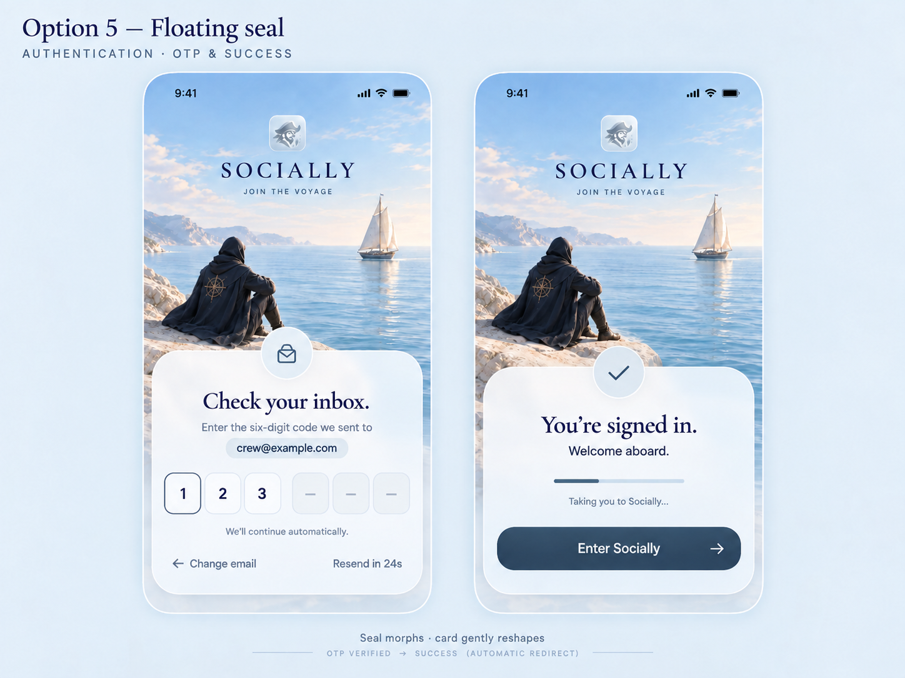

Socially auth, five directions.
Based on the 34 screens linked in the app README. Each generated concept pairs OTP entry with successful login. These are design proposals; the current app remains as implemented.
Current implementation
Browser captures at 390 × 844 using the production auth screen and a mocked login. Native rendering may differ.




1 · Coastal glass
Closest fit to the existing app. Retains the familiar coastal backdrop and frosted bottom sheet. Proposed motion: mail → lock → check, with a gentle sheet rise.

2 · Boarding pass
A nautical card with subtle notches and a dashed divider. Proposed motion: focus moves between digits, then the card transforms into confirmation.

3 · Open editorial
A quieter layout with generous space and underline inputs. Proposed motion: the active underline travels, then the content settles into success.

4 · Navy anchor
Brings the app’s navy vault-card treatment into the digit field. Proposed motion: subtle focus glow, then the inset panel becomes confirmation.

5 · Floating seal
A compact floating card with an overlapping seal and digits grouped three plus three. Proposed motion: the seal morphs as the card gently reshapes.
